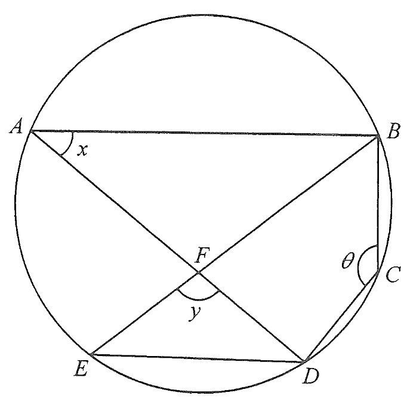

In Figure 1, $ABCDE$ is a circle. It is given that $AB // ED$. $AD$ and $BE$ intersect at the point $F$.
Express $x$ and $y$ in terms of $\theta$. 5 marks

Since $ABCDE$ is a circle, $BCDE$ is a cyclic quadrilateral, and the exterior angle at $A$ lies on the straight line $AB$.
Because $AB // ED$, the interior angles on the same side of the transversal $AD$ are supplementary:
$$ x + \theta = 180^\circ $$
$$\therefore\; x = 180^\circ - \theta$$
Reason: interior angles of parallel lines ($AB // ED$), same side of transversal $AD$.
Since $AB // ED$ (alternate angles with transversal $AD$):
$$ \angle ADE = \angle DAB = x = 180^\circ - \theta $$
Reason: alternate angles, $AB // ED$.
Angles in the same segment subtended by $BD$ are equal:
$$ \angle BED = \angle BAD = x = 180^\circ - \theta $$
Reason: angles in the same segment.
In $\triangle FED$, the interior angles sum to $180^\circ$:
$$ y = 180^\circ - \angle ADE - \angle BED $$
$$ y = 180^\circ - (180^\circ - \theta) - (180^\circ - \theta) $$
$$ y = 2\theta - 180^\circ $$
Reason: angle sum of triangle.
$$ x = 180^\circ - \theta, \qquad y = 2\theta - 180^\circ $$
Note: since $y>0$, the configuration requires $90^\circ < \theta < 180^\circ$.
Question. In the figure, \(AB // CD\) and \(A\), \(B\), \(C\), \(D\) lie on a circle. Given \(\angle BAC=35^{\circ}\) and \(\angle ACB=78^{\circ}\), find \(\angle ACD\) and \(\angle ADC\).